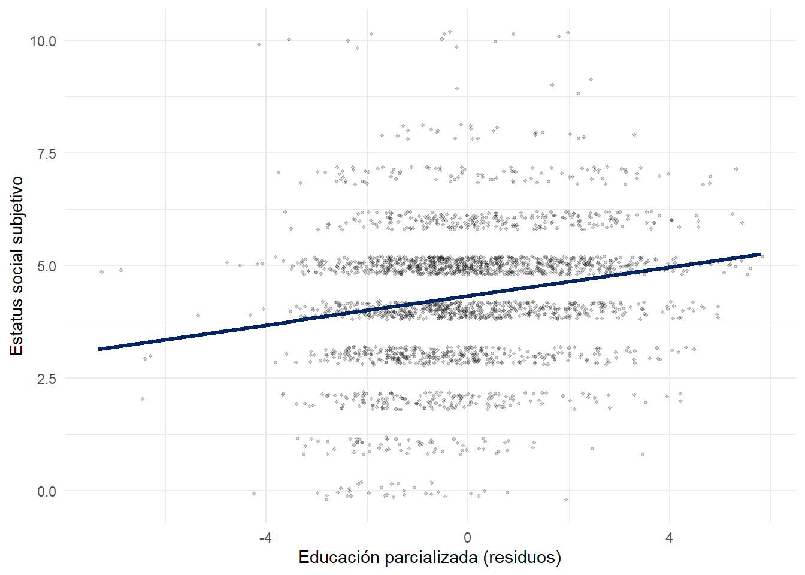

pacman::p_load(dplyr,
sjmisc,
sjPlot,
kableExtra,
ggplot2)Práctico 04. Regresión lineal múltiple
Métodos estadísticos para Ciencias Sociales III
1 Presentación
1.1 Objetivo de la práctica
Los tres prácticos anteriores trabajaron con un solo predictor. Esta guía incorpora varias variables independientes al mismo modelo. Al terminar, usted debería ser capaz de:
- Estimar modelos de regresión múltiple e interpretar sus coeficientes correctamente
- Comparar modelos y explicar por qué cambian los coeficientes al agregar predictores
- Reproducir manualmente la parcialización que realiza el modelo múltiple
- Distinguir entre \(R^2\) y \(R^2\) ajustado, y comparar formalmente el ajuste de dos modelos
- Obtener valores predichos con más de un predictor
1.2 Los datos
Trabajaremos con el ejemplo visto en clases: el estatus social subjetivo en ELSOC 2016. La pregunta de investigación proviene de Castillo, Miranda y Madero Cabib (2013), Todos somos de clase media: sobre el estatus social subjetivo en Chile, publicado en Latin American Research Review. La investigación original está disponible acá.
La idea central es que, en un país con alta concentración del ingreso, cabría esperar percepciones dispersas sobre la propia posición social. Sin embargo, se observa una fuerte tendencia a ubicarse en el medio de la escala. La pregunta que abordaremos es cuánto pesan la educación y el ingreso en la posición que las personas se atribuyen.
2 Preparación
2.1 Librerías
rm(list = ls())
options(scipen = 999)2.2 Carga y procesamiento
load(url("https://github.com/Kevin-carrasco/metod3-unab/raw/refs/heads/main/files/data/elsoc16-22.RData"))Seleccionamos las variables de interés de la primera ola:
d01_01: estatus social subjetivo, medido en una escalera de 0 a 10m01: nivel educacional (1 a 10)m29: ingreso total del hogarm0_edad: edad en años
proc_data <- elsoc_long_2016_2022.2 %>%
filter(ola == 1) %>%
select(d01_01, m01, m29, m0_edad) %>%
set_na(., na = c(-999, -888, -777, -666)) %>%
rename("estatus" = d01_01,
"educacion" = m01,
"ingreso" = m29,
"edad" = m0_edad) %>%
na.omit()
dim(proc_data)[1] 2328 42.3 Un paso necesario: revisar el ingreso
Antes de estimar, conviene mirar la variable de ingreso:
summary(proc_data$ingreso) Min. 1st Qu. Median Mean 3rd Qu. Max.
0 280000 450000 2492564 700000 4000000000 El máximo resulta implausible: se trata de errores de registro. Un valor extremo puede alterar sustancialmente un coeficiente de regresión, de modo que corresponde acotarlo:
proc_data <- proc_data %>%
filter(ingreso >= 50000, ingreso <= 5000000)
nrow(proc_data)[1] 2301
NotaDecisiones de limpieza
Todo criterio de este tipo es una decisión del investigador y debe declararse en el reporte. Aquí descartamos ingresos menores a 50 mil y mayores a 5 millones de pesos mensuales por hogar. Otro criterio razonable habría sido recortar el 1% superior de la distribución. De todas formas, ingreso siempre es una variable difícil de trabajar porque las personas suelen no responder (en este caso, 587 personas no la respondieron). Esto puede tener distintas implicancias en la validez de los resultados.
Finalmente, expresamos el ingreso en cientos de miles de pesos, para que el coeficiente no quede con cinco ceros a la derecha del punto decimal:
proc_data$ing100 <- proc_data$ingreso / 1000002.4 Descriptivos
proc_data %>%
summarise(across(c(estatus, educacion, ing100, edad),
list(media = mean, de = sd))) %>%
round(2) %>%
kable("markdown")| estatus_media | estatus_de | educacion_media | educacion_de | ing100_media | ing100_de | edad_media | edad_de |
|---|---|---|---|---|---|---|---|
| 4.33 | 1.53 | 5.16 | 2.18 | 5.88 | 5.58 | 46.07 | 15.14 |
2.5 Correlaciones
Antes de estimar cualquier modelo múltiple, conviene revisar cómo se relacionan los predictores entre sí. Como veremos, eso permite anticipar qué ocurrirá con los coeficientes:
cor(proc_data[, c("estatus", "educacion", "ing100", "edad")]) %>%
round(3) %>%
kable("markdown")| estatus | educacion | ing100 | edad | |
|---|---|---|---|---|
| estatus | 1.000 | 0.291 | 0.275 | -0.047 |
| educacion | 0.291 | 1.000 | 0.471 | -0.354 |
| ing100 | 0.275 | 0.471 | 1.000 | -0.158 |
| edad | -0.047 | -0.354 | -0.158 | 1.000 |
Retenga dos cosas: educación e ingreso se correlacionan positivamente entre sí, mientras que educación y edad lo hacen de forma negativa.
3 Estimación de modelos anidados
La sintaxis de la regresión múltiple simplemente agrega predictores con el signo +:
NotaRegresión múltiple
modelo <- lm(y ~ x1 + x2 + x3, data = datos)
modelo1 <- lm(estatus ~ educacion, data = proc_data)
modelo2 <- lm(estatus ~ educacion + ing100, data = proc_data)
modelo3 <- lm(estatus ~ educacion + ing100 + edad, data = proc_data)Se denominan anidados porque cada modelo contiene a los predictores del anterior más uno adicional. Esto permite observar qué le ocurre a cada coeficiente a medida que se incorporan controles.
tab_model(list(modelo1, modelo2, modelo3),
show.se = TRUE,
show.ci = FALSE,
digits = 3,
p.style = "stars",
dv.labels = c("Modelo 1", "Modelo 2", "Modelo 3"),
pred.labels = c("(Intercepto)", "Nivel educacional",
"Ingreso (cientos de miles)", "Edad"),
string.pred = "Predictores",
string.est = "β")| Modelo 1 | Modelo 2 | Modelo 3 | ||||
|---|---|---|---|---|---|---|
| Predictores | β | std. Error | β | std. Error | β | std. Error |
| (Intercepto) | 3.273 *** | 0.078 | 3.290 *** | 0.077 | 2.922 *** | 0.146 |
| Nivel educacional | 0.204 *** | 0.014 | 0.145 *** | 0.016 | 0.161 *** | 0.016 |
| Ingreso (cientos de miles) | 0.049 *** | 0.006 | 0.048 *** | 0.006 | ||
| Edad | 0.006 ** | 0.002 | ||||
| Observations | 2301 | 2301 | 2301 | |||
| R2 / R2 adjusted | 0.085 / 0.084 | 0.109 / 0.108 | 0.113 / 0.111 | |||
| * p<0.05 ** p<0.01 *** p<0.001 | ||||||
4 Interpretación
4.1 La regla general
En regresión múltiple, cada coeficiente se interpreta manteniendo constantes las demás variables del modelo. Esa cláusula no es un adorno: cambia el significado de lo que se afirma.
coef(modelo3)(Intercept) educacion ing100 edad
2.921529862 0.161068530 0.048334807 0.006267146 Redactado con precisión:
- Nivel educacional: por cada nivel educacional adicional, el estatus social subjetivo aumenta en el valor del coeficiente, entre personas de igual ingreso y edad
- Ingreso: por cada cien mil pesos adicionales de ingreso del hogar, el estatus aumenta en el valor del coeficiente, entre personas de igual nivel educacional y edad
- Edad: por cada año adicional, el estatus aumenta en el valor del coeficiente, entre personas de igual educación e ingreso
4.2 Por qué cambian los coeficientes
Compare el coeficiente de educación entre los modelos:
data.frame(
Modelo = c("1. Solo educación", "2. + ingreso", "3. + ingreso y edad"),
Coef_educacion = c(coef(modelo1)[2], coef(modelo2)[2], coef(modelo3)[2])
) %>%
kable("markdown", digits = 3)| Modelo | Coef_educacion |
|---|---|
| 1. Solo educación | 0.204 |
| 2. + ingreso | 0.145 |
| 3. + ingreso y edad | 0.161 |
Al agregar ingreso, el coeficiente disminuye: parte de lo que el modelo 1 atribuía a la educación correspondía en realidad al ingreso que suele acompañarla. Al agregar edad, en cambio, aumenta, porque educación y edad se correlacionan negativamente.
4.3 El caso de la edad
Estimemos la edad por separado y comparemos con su coeficiente en el modelo completo:
modelo_edad <- lm(estatus ~ edad, data = proc_data)
c(bivariado = coef(modelo_edad)[2], multiple = coef(modelo3)[4])bivariado.edad multiple.edad
-0.004760002 0.006267146 El signo se invierte. La lectura sustantiva es la siguiente: las personas mayores tienen en promedio menor nivel educacional, y eso arrastra hacia abajo la asociación bruta entre edad y estatus. Al comparar personas con la misma educación e ingreso, las de mayor edad se ubican más arriba en la escalera social.
ImportanteUna lección para el reporte
Nunca se interpreta un coeficiente sin señalar qué variables están en el modelo. El mismo predictor puede tener signos opuestos según lo que se controle, y ambas cifras son correctas: responden a preguntas distintas.
5 Valores predichos y residuos
Antes de entrar en la parcialización, conviene recuperar tres cantidades que ya conocemos del práctico anterior, ahora en un modelo con varios predictores.
5.1 Los tres valores
Para cada caso podemos obtener:
- el valor observado de la variable dependiente (\(Y_i\))
- el valor predicho por el modelo (\(\widehat{Y}_i\))
- el residuo, que es la diferencia entre ambos (\(e_i = Y_i - \widehat{Y}_i\))
proc_data$predicho <- fitted.values(modelo3)
proc_data$residuo <- residuals(modelo3)La diferencia respecto del práctico anterior es que ahora el valor predicho no proviene de una recta, sino de la combinación de los tres predictores:
\[\widehat{estatus} = b_0 + b_1(educacion) + b_2(ing100) + b_3(edad)\]
5.2 La tabla
head(proc_data %>%
select(educacion, ing100, edad, estatus, predicho, residuo), 10) %>%
kable("markdown", digits = 2,
col.names = c("Educación", "Ingreso", "Edad",
"Observado", "Predicho", "Residuo"))| Educación | Ingreso | Edad | Observado | Predicho | Residuo |
|---|---|---|---|---|---|
| 2 | 3.0 | 64 | 5 | 3.79 | 1.21 |
| 4 | 5.0 | 60 | 5 | 4.18 | 0.82 |
| 5 | 5.0 | 54 | 6 | 4.31 | 1.69 |
| 5 | 3.5 | 38 | 4 | 4.13 | -0.13 |
| 5 | 7.0 | 34 | 6 | 4.28 | 1.72 |
| 9 | 8.0 | 53 | 7 | 5.09 | 1.91 |
| 9 | 7.0 | 55 | 6 | 5.05 | 0.95 |
| 4 | 7.0 | 42 | 5 | 4.17 | 0.83 |
| 5 | 7.0 | 28 | 6 | 4.24 | 1.76 |
| 7 | 4.0 | 28 | 6 | 4.42 | 1.58 |
Lea la tabla fila por fila. Las tres primeras columnas describen a la persona; la cuarta indica dónde declaró ubicarse en la escalera social; la quinta, dónde el modelo esperaría encontrarla dadas sus características; y la sexta, la distancia entre ambas.
Un residuo positivo indica que la persona se ubica más arriba de lo que predicen su educación, su ingreso y su edad. Uno negativo, más abajo.
5.3 Comprobaciones
Como en el práctico anterior, la suma de los residuos es prácticamente cero:
sum(proc_data$residuo)[1] -0.0000000000001184833Y el promedio de los valores predichos coincide con el promedio de la variable observada:
c(observado = mean(proc_data$estatus), predicho = mean(proc_data$predicho))observado predicho
4.325511 4.325511 5.4 Casos extremos
Resulta ilustrativo mirar quiénes se apartan más del modelo. Primero, los cinco residuos más altos:
proc_data %>%
arrange(desc(residuo)) %>%
head(5) %>%
select(educacion, ing100, edad, estatus, predicho, residuo) %>%
kable("markdown", digits = 2,
col.names = c("Educación", "Ingreso", "Edad",
"Observado", "Predicho", "Residuo"))| Educación | Ingreso | Edad | Observado | Predicho | Residuo |
|---|---|---|---|---|---|
| 2 | 4.0 | 67 | 10 | 3.86 | 6.14 |
| 2 | 5.0 | 62 | 10 | 3.87 | 6.13 |
| 5 | 1.0 | 45 | 10 | 4.06 | 5.94 |
| 5 | 3.2 | 29 | 10 | 4.06 | 5.94 |
| 4 | 4.0 | 60 | 10 | 4.14 | 5.86 |
Y los cinco más bajos:
proc_data %>%
arrange(residuo) %>%
head(5) %>%
select(educacion, ing100, edad, estatus, predicho, residuo) %>%
kable("markdown", digits = 2,
col.names = c("Educación", "Ingreso", "Edad",
"Observado", "Predicho", "Residuo"))| Educación | Ingreso | Edad | Observado | Predicho | Residuo |
|---|---|---|---|---|---|
| 9 | 30.0 | 25 | 1 | 5.98 | -4.98 |
| 5 | 8.0 | 60 | 0 | 4.49 | -4.49 |
| 7 | 3.0 | 37 | 0 | 4.43 | -4.43 |
| 5 | 3.1 | 57 | 0 | 4.23 | -4.23 |
| 5 | 44.0 | 48 | 2 | 6.15 | -4.15 |
Estos casos no son errores ni datos defectuosos: son personas cuya percepción de su propia posición se distancia de lo que sugieren sus características objetivas. Precisamente esa distancia es el fenómeno que estudia la literatura sobre estatus subjetivo.
6 Parcialización
En clases vimos que la regresión múltiple parcializa cada predictor respecto de los demás. Reproduzcamos ese procedimiento manualmente para comprobar que efectivamente es lo que ocurre.
6.1 Paso 1: predecir un predictor con los otros
aux <- lm(educacion ~ ing100 + edad, data = proc_data)6.2 Paso 2: extraer los residuos
Los residuos de esa regresión corresponden a la parte de la educación que no es explicada por el ingreso ni por la edad:
proc_data$educacion_parcializada <- residuals(aux)summary(proc_data$educacion_parcializada) Min. 1st Qu. Median Mean 3rd Qu. Max.
-7.3392 -1.3212 -0.1788 0.0000 1.1906 5.8052 Note que su promedio es cero, como corresponde a cualquier conjunto de residuos.
6.3 Paso 3: estimar el estatus con la variable parcializada
modelo_parcial <- lm(estatus ~ educacion_parcializada, data = proc_data)
c(parcializado = coef(modelo_parcial)[2], multiple = coef(modelo3)[2])parcializado.educacion_parcializada multiple.educacion
0.1610685 0.1610685 Los valores coinciden. Esto confirma que el coeficiente de un predictor en la regresión múltiple equivale al de una regresión simple sobre ese mismo predictor una vez descontado lo que comparte con los demás.
6.4 Visualización
ggplot(proc_data, aes(x = educacion_parcializada, y = estatus)) +
geom_jitter(alpha = 0.2, size = 0.8, width = 0.1, height = 0.2) +
geom_smooth(method = "lm", se = FALSE, color = "#04245f", linewidth = 1.2) +
labs(x = "Educación parcializada (residuos)", y = "Estatus social subjetivo") +
theme_minimal()
El eje horizontal ya no representa el nivel educacional, sino cuánta educación tiene una persona por sobre o por debajo de lo esperable dado su ingreso y su edad.
7 Ajuste del modelo
7.1 \(R^2\) y \(R^2\) ajustado
data.frame(
Modelo = c("Modelo 1", "Modelo 2", "Modelo 3"),
R2 = c(summary(modelo1)$r.squared,
summary(modelo2)$r.squared,
summary(modelo3)$r.squared),
R2_ajustado = c(summary(modelo1)$adj.r.squared,
summary(modelo2)$adj.r.squared,
summary(modelo3)$adj.r.squared)
) %>%
kable("markdown", digits = 4)| Modelo | R2 | R2_ajustado |
|---|---|---|
| Modelo 1 | 0.0848 | 0.0844 |
| Modelo 2 | 0.1092 | 0.1085 |
| Modelo 3 | 0.1126 | 0.1115 |
El \(R^2\) nunca disminuye al agregar predictores, incluso si son irrelevantes, porque siempre captura algo de varianza por azar. El \(R^2\) ajustado penaliza la incorporación de variables adicionales, de modo que es el indicador apropiado para comparar modelos con distinto número de predictores.
7.2 Comparación formal de modelos
La función anova() permite contrastar si la mejora en el ajuste al agregar un predictor es estadísticamente significativa:
anova(modelo1, modelo2, modelo3)Analysis of Variance Table
Model 1: estatus ~ educacion
Model 2: estatus ~ educacion + ing100
Model 3: estatus ~ educacion + ing100 + edad
Res.Df RSS Df Sum of Sq F Pr(>F)
1 2299 4908.3
2 2298 4777.3 1 130.944 63.1993 0.000000000000002902 ***
3 2297 4759.2 1 18.122 8.7464 0.003134 **
---
Signif. codes: 0 '***' 0.001 '**' 0.01 '*' 0.05 '.' 0.1 ' ' 1Cada fila compara un modelo con el anterior. Un valor p pequeño indica que el predictor agregado mejora significativamente el ajuste.
7.3 Una nota sobre la magnitud
round(summary(modelo3)$r.squared * 100, 1)[1] 11.3El modelo completo explica alrededor de un 11% de la varianza del estatus subjetivo. Lejos de ser una debilidad, ese resultado es el hallazgo del artículo de referencia: la posición objetiva de las personas predice muy poco la posición que ellas mismas se atribuyen.
8 Tarea
8.1 Preparación
Cargar la base ELSOC y filtrar por la ola 4 (2019)
Seleccionar las mismas variables utilizadas en este práctico, recodificar los valores perdidos, aplicar el mismo criterio de limpieza al ingreso y expresarlo en cientos de miles
Reportar cuántos casos quedan disponibles
8.2 Correlaciones
Estimar la matriz de correlaciones entre las cuatro variables
A partir de ella, anticipar qué ocurrirá con el coeficiente de educación al agregar ingreso al modelo, y justificar la expectativa
8.3 Modelos múltiples
Estimar los tres modelos múltiples de este práctico
Presentar una tabla comparativa con
tab_model, con nombres de variables legiblesElaborar una tabla propia que muestre cómo cambia el coeficiente de educación a través de los tres modelos
Comparar el resultado con lo que había anticipado en el punto anterior
8.4 Parcialización
Reproducir manualmente la parcialización del ingreso (no de la educación) respecto de los otros dos predictores
Verificar que el coeficiente obtenido coincide con el del modelo múltiple
8.5 Ajuste
Comparar el \(R^2\) y el \(R^2\) ajustado de los tres modelos
Aplicar
anova()y señalar si cada predictor agregado mejora significativamente el ajuste
8.6 Reporte
- Redactar un párrafo (máximo 300 palabras) que reporte los tres modelos, interprete el coeficiente de educación en el modelo completo, explique por qué cambia entre especificaciones, y comente el valor del \(R^2\) a la luz de la literatura sobre estatus social subjetivo